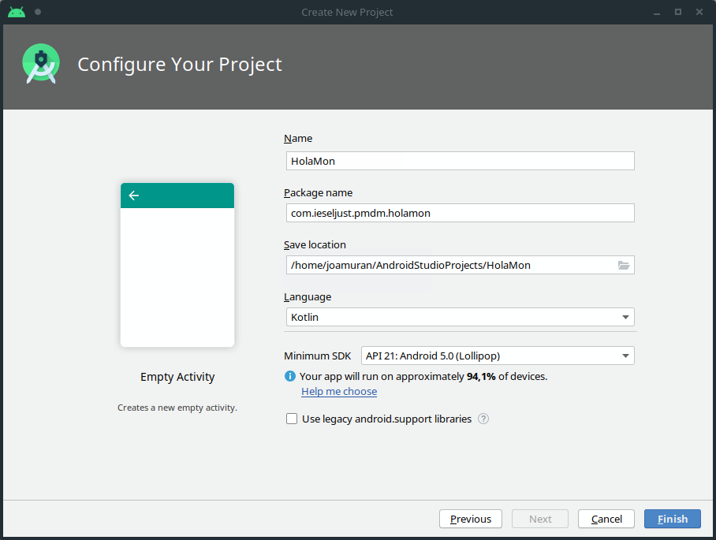

1. Android Studio i Kotlin. Primers pasos.
1. Android Studio
Android Studio és un IDE basat en JetBrains IntelliJ Idea per al desenvolupament en Android.
Les principals característiques d’aquest IDE són:
- És distribuït sota llicència Apache 2.0 (lliure)
- Està desenvolupat en Java, C i C++
- Fa ús de Gradle per a la construcció de paquets
- Refactorització de codi
- Entorn WYSIWYG (What you see is what you get)
- Ofereix supoert per a aplicacions Android Wear /Wear OS, per a dispositius corporals (wereables),
- Ofereix emupadors de dispositius virtuals per executar i depurar apliccions
2. Instal·lació
El lloc web d’Android Studio (https://developer.android.com/studio) ens ofereix la possibilitat de descarregar i instal·lar l’IDE en qualsevol plataforma.
Al nostre cas, per tal de facilitar la instla·lació, en Ubuntu/Justix farem ús d’Ubuntu Make.
Amb Ubuntu make, per tal d’instal·lar només haurem de fer:
$ umake android android-studio
Aquesta ordre ens demanarà el nostre usuari i contrassenya de root. Posteriorment, ens demanarà el directori on fer la instal·lació (generalment /home/nom_usuari/.local/share/umake/android/android-studio), i finalment, que acceptem la llicència.
Després d’estes preguntes, descarregarà tot allò que necessita per començar la instal·lació (aquest procés tardarà una estoneta… són més de 1.5GB de disc).
Una vegada instal·lat, és possible que hajam de reiniciar la sessió per tal de poder accedir a ell.
LA primera vegada que iniciem Android Studio, se’ns obre un assistent per fer la configuració de l’IDE:
En aquest cas, anem a seleccionar l’opció estàndard.
La següent pantalla d’aquest assistent, ens demana el tema, presentant-nos un tema fosc (Darcula) i un tema més clar (Light):

L’últim que ens demana és que configurem els diferents components del SDK. Deixarem els components que apareixen de forma predeterminada: Android SDK i l'API 30: Android 10.0+). El que sí que haurem de modificar és la ruta per a la instal·lació del SDK, que per omissió ens marca la mateixa on tenim l’Android Studio:

Modifiquem aquest ruta al nostre home, per exemple: ~/.local/share/Android/Sdk (que caldrà crear prèviament):
La següent pantalla ens mostrarà un ressum de la instal·lació que es va a realitzar, fem click en Següent.
Finalment, l’assistent detecta que ens trobem a un sistema Linux i ens permet habilitar la virtualització basada en el kernel (KVM) per tal d’executar l’emulador d’Android en el mode de rendiment accelerat.
Al lloc web https://developer.android.com/studio/run/emulator-acceleration?utm_source=android-studio#vm-linux se’ns explica com podem habilitar KVM per fer açò.
Per comprovar si tenim kvm habilitat, podem fer ús de l’ordre
kvm-okdel paquetcpu-checker:$ kvm-ok INFO: /dev/kvm exists KVM acceleration can be used
Quan li donem click a Finish començarà amb la descàrrega i instal·lació de tot el programari que necessita.
Finalitzat aquest procés d’instal·lació, ja tindrem disponible la pantalla de benvinguda.
3. Primers passos amb Android Studio
Després de la instal·lació, i sempre que tornem a obrir Android Studio, se’ns presenta una finestra de benvinguda semblant a la següent:
Des de la que podrem fer vàries coses, tals com:
- Iniciar un projecte nou
- Obrir un projecte que ja existeix al nostre ordinador
- Obtenir un projecte des d’un sistema de control de versions
- Depurar aplicacions
- Importar altres projectes creats amb altres IDEs
- Importar codis d’exemple
Per tal de fer un xicotet exemple d’Hola Món, seleccionarem la primera Start a New Android Project per començar un projecte nou.
Després ens demanarà que triem la plataforma per a la que anem a desenvolupar el nostr projecte i el tipus de projecte. Android Studio ens permet desenvolupar aplicacions per a diferents dispositius, tals com telèfons i tauleta, wereables, televisors, cotxes o IoT (Internet of Things).
Pel que fa al tipus de projecte, que triarem a la part de baix, se’ns ofereix una sèrie de platilles predissenyades per començar. Per fer una aplicació de tipus Hola Món senzilla seleccionarem Empty Activity, per tal que siga una aplicació consistent en una única pantalla.
En Android, les diferents pantalles que conformen una aplicació es coneixen com Activities o Activitats.
En la pròxima pantalla se’ns demanen algunes dades del projecte, com el llenguatge i el SDK mínim que suportarem. Triarem el llenguatge Kotlin i la el SDK mínim Android 5.

Quin SDK escollir?
Escollir un SDK mínim dependrà de les funcionalitats que necessitem a la nostra aplicació i de la quantitat de dispositius als què volem arribar.
Si modifiquem el SDK, veurem que a la part de baix ens va canviant el percentatge de dispositius per als què funcionaria la nostra aplicació. Com més baixet triem l’SDK arribarem a més dispositius, però no tindrem totes les funcionalitats de les últimes versions de l’API de l’SDK. En canvi, si triem un SDK amb major nivell d’API, tindrem més funcionalitats, peró la nostra aplicació serà suportada per menys dispositius.
Per ajudar-nos en la selecció, Android Studio ens ofereix si fem click a Help me choose un ressum dels diferents SDKs que suporta, junt amb el nivell de l’API i les principals característiques d’aquest, així com el percentatge de dispositius que la suportaríen.
Una vegada tenim les característiques del projecte definides, donem clic a finalitzar per a que ens genere tot el projecte.
3.1. La interfície d’Android Studio
Una vegada generat el projecte se’ns obri la següent finestra:
Poc a poc anirem descobrint detalls d’aquesta interfície, però com veiem, no dista molt dels IDEs que ja coneixem. A la següent imatge podem veure les parts principals d’aquesta interfície:
En ella distingim:
- La barra d’eines per gravar, obrir, construir o executar el programa, entre d’altres opcions,
- La barra de navegació, per explorar el projecte,
- La finestra de l’editor, on tenim el codi o el disseny de l’aplicació,
- La barra de la finestra d’eines, que envolta tot l’IDE i conté botons per expandir o contraure finestres d’eines individuals,
- Les Finestres d’Eines, amb diverses utilitats, com l’administració de projectes, recerca de text, control de versions, finestra de depuració, etc. A la finestra de l’esquerra d’Administració del projecte, podem veure que apareixen diverses vistes del nostre projecte. Les que més utilitzarem serà la pròpia del projecte (Project), la de fitxers (Project Files) o la d’Android.
Podem trobar més informació sobre la interfície a la web de desenvolupadors d’Android: https://developer.android.com/studio/intro?hl=es-419
3.2. La vista de fitxers del projecte
Centrant-nos ara en aquesta finestra lateral d’eines per vore com s’ha estructurat el projecte generat i com es mostra a les diferents vistes. Anem a seleccionar la vista de Project Files per veure més clar tota l’estructura generada:

Com veiem, es tracta d’una estructura molt semblant a la dels projectes en Gradle que ja hem vist. En la carpeta arrel, disposem dels wrappers per a Windows (gradlew i gradlew.bat), alguns fitxers de configuració, de git, i el més important: el fitxer build.graddle, de configuració del projecte. Si l’obrim veurem que està expressat en el format Groovy que ja coneixem i que inclou alguns repositoris i dependències, però no inclou cal classe per llançar l’aplicació.
Per altra banda, veiem que no existeix el directori src típic amb el codi font, però en canvi, tenim una carpeta app (que com veurem després, defineix un mòdul). Si obrim aquesta carpeta, veurem que dins tenim la carpet asrc de fonts, més una carpeta buida per a llibreries, i altre fitxer build.gradle. Si obrim aquest fitxer, veurem un codi semblant a aquest:
apply plugin: 'com.android.application'
apply plugin: 'kotlin-android'
apply plugin: 'kotlin-android-extensions'
android {
compileSdkVersion 30
buildToolsVersion "30.0.2"
defaultConfig {
applicationId "com.ieschabas.pmdm.holamon"
minSdkVersion 21
targetSdkVersion 30
versionCode 1
versionName "1.0"
testInstrumentationRunner "androidx.test.runner.AndroidJUnitRunner"
}
buildTypes {
release {
minifyEnabled false
proguardFiles getDefaultProguardFile('proguard-android-optimize.txt'), 'proguard-rules.pro'
}
}
}
...
Com veiem, apareix una nova secció android, i el plugin com.android.application, junt amb algunes coses més. Android Studio afig un complement d’Android per als projectes Gradle, que ofereix algunes capacitats específiques per a Android. Els projectes en Gradle, permeten aqueta flexibilitat de tindre un fitxer de compilació build.gradle de nivell superior per a tot el projecte, i fitxers de compilació build.gradle a nivell de mòduls independents. Quan importem un projecte existent, Android Studio generarà automàticament aquests fitxers de compilació.
Un altre detall curiós és que a diferència d’un projecte Kotlin, la carpeta src/main conté una subcarpeta java, encara que el codi que conté siga kotlin.
Per altra banda, la carpeta de recursor resources, ara s’anomenarà res, i recordem que contindrà tots els recursos de la nostra aplicació. En projectes Android, aquesta carpeta rep encara més rellevància, ja que a banda d’imatges, emmagatzema també el codi XML de les interfícies d’usuari.
Dins aquesta carpeta src/main, també tenim el fitxer AndroidManifest.xml, amb informació sobre l’aplicació i els seus recursos (nom, icona, tema, activitat principal, etc.)
3.3. La vista Android
Si canviem a la vista d’Android, veurem els diferents mòduls de què consta el nostre projecte.
Estructura d’un projecte Android Studio
Cada projecte Android Studio inclou un o més mòduls amb fitxers de codi font i recursos. Aquests tipus de mòduls poden ser:
- Mòduls d’Apps per a Android
- Mòduls de biblioteca
- Mòduls de Google App Engine
Al notre cas, només disposem d’un mòdul anomenat app, i dins d’ell distingim tres carpetes:
- La carpeta
manifestamb el fitxerAndroidManifest.xml, - La carpeta
java, amb els diferents fonts i tests, - La carpeta
res, amb els diferents recursos de l’aplicació.
A mé també tenim accés als diferents scripts de Gradle i fitxers de configuració.
4. Execució de l’aplicació
Tinguem en compte que encara no hem afegit cap línia de codi a banda del què ens genera automàticament el projecte.
Anem a llançar ara l’aplicació, de manera que puguem veure aquesta empty activity de què consta.
Per a això, farem clic en el Play de la barra d’eines, i observem què passa:
Què ha passat? Doncs que no tenim cap dispositiu sobre el que llançar l’aplicació.
Per configurar doncs un dispositiu tenim dues opcions:
- Fer ús d’un emulador, o bé
- Executar-lo en un dispositiu físic
Anem a fer ús d’un emulador. Per a això, ens fixem en la marra d’eines, al desplegable que de moment marca No Devices:
Fem clic en ell, per obrir ara el AVD Manager. Dins d’aquest, crearem un dispospositiu nou (Create Virtual Device).
És important escollir un dispositiu que dispose de Google Play, com per exemple el Pixel 3. Després triarem el sistema operatiu que volem en ell. En el nostre cas, hem triat Android 10. Tingueu en compte que caldrà descarregar el sistema abans de continuar, el que pot ser un procés bastant costós, segons tot el què estiguem instal·lant (Sistema operatiu, playstore,etc.)
I ara ja, finalment, podem llançar l’aplicació en el dispositiu emulat, i com veurem, mostra el missatge Hola Mon.
Activant la virtualització a l’emulador
Una vegada tenim l’emulador descarregat, podem activar l’acceleració de la màquina virtual.
Per a això, només cal que, des de la línia d’ordres activem el paràmetre
-accel-checkde l’emulador. Si hem instal·lat el SDK en~/.local/share/Android/Sdk, podem activar-ho amb:~/.local/share/Android/Sdk/emulator/emulator -accel-checkDisposeu de més informació sobre l’acceleració de la màquina virutal i gràfica al següent enllaç:
5. Fitxers d’Activities i Layouts
Com hem dit, cada pantalla de la nostra aplicació rep el nom d'Activity. Aquestes pantalles, tindran dos fitxers associats, el corresponent a la interfície, que es trobarà com un recurs, dins la carpeta src i fitxer de codi font.
Per a la finestra principal de la nostra aplicació MainActivity, disposem del següent fitxer font MainActivity.kt:
package com.ieschabas.pmdm.holamon
import androidx.appcompat.app.AppCompatActivity
import android.os.Bundle
class MainActivity : AppCompatActivity() {
override fun onCreate(savedInstanceState: Bundle?) {
super.onCreate(savedInstanceState)
setContentView(R.layout.activity_main)
}
}
La sintaxi d’aquest codi ens és familiar. En primer lloc, defineix el paquet com.ieschabas.pmdm.holamon i importa un parell de llibreríes.
Després, defineix la classe MainActivity com a una classe descendent de la classe AppCompatActivity, i està sobreescrivint el seu mètode onCreate. Aquest mètode rep un objecte de tipus Bundle anomenat savedInstanceState, que pot ser nul (?). A més, dins d’ell, invoca el mètode onCreate de la seua classe pare, passant-li el mateix objecte. Poc a poc anirem veient què és tot açò.
Per altra banda, als recursos del sistema tenim, dins la carpeta layout el fitxer activity-main.xml. Tot i ser un fitxer XML, Android Studio ens mostra una interfície WYSIWYG (What you see is what you get), de manera que veiem el disseny de la pantalla, junt amb diferents elements d’interfície que podríem afegir, simplement, arrossegant i soltant en aquesta.
Com veiem, aquesta vista de disseny del Layout ens permet modificar tant les propietats dels objectes que tenim a l’activitat, a través de les Propietats del component i les seues Eines de Disseny, així com afegir nous elements mitjançant la paleta de components i veure com aquests s’organitzen mitjançant l'Arbre de components. Si ens fixem en aquest arbre de components, veurem que tenim un component de tipus TextView dins el ConstrantLayout.
Per altra banda, si volem accedir a consultar el codi d’aquesta interfície, ho podem fer amb la barra de botons ubicada a la part superior dreta de la vista de disseny, i on podem alternar entre el codi XML, la vista de disseny o una vista híbrida:
Proveu a modificar la propietat Text del TextView, i torneu a llançar l’aplicació en l’emulador.
Adoneu-vos que en aquest cas, no hem definit el missatge al codi del programa principal Kotlin, sinò que el misstge està definit dins la pròpia interfície. No obstant això, aquest missatge es pot modificar des del propi codi Kotlin.
Per altra banda, podem consultar l’XML de la interfície, per veure’n quin format té i com s’expressen aquests atributs:
<?xml version="1.0" encoding="utf-8"?>
<androidx.constraintlayout.widget.ConstraintLayout xmlns:android="http://schemas.android.com/apk/res/android"
xmlns:app="http://schemas.android.com/apk/res-auto"
xmlns:tools="http://schemas.android.com/tools"
android:layout_width="match_parent"
android:layout_height="match_parent"
tools:context=".MainActivity">
<TextView
android:id="@+id/TextPrincipal"
android:layout_width="wrap_content"
android:layout_height="wrap_content"
android:text="Bon dia!"
app:layout_constraintBottom_toBottomOf="parent"
app:layout_constraintLeft_toLeftOf="parent"
app:layout_constraintRight_toRightOf="parent"
app:layout_constraintTop_toTopOf="parent" />
</androidx.constraintlayout.widget.ConstraintLayout>
6. Enllaçant Layout i Activities
Kotlin disposa d’un mecanisme bastant senzill per enllaçar els diferents Layouts i les Activities.
Abans que res, tornem al disseny, i arrosseguem un objecte de tipus botó simple a qualsevol lloc de la vista prèvia, i li modifiquem el text de dins, modificant la propietat text.
Una altra cosa important que farem és afegir un id tant al botó com al TextView. Aquest id ens servirà per referir-nos a ells posteriorment.
Podem
Ara tornem al codi Kotlin, i afegim el següent import:
import kotlinx.android.synthetic.main.activity_main.*
Amb això, importarem els elements d’interfície de la vista activity_main.
Ara, anem a modificar el codi del mètode onCreate amb el següent:
override fun onCreate(savedInstanceState: Bundle?) {
super.onCreate(savedInstanceState)
setContentView(R.layout.activity_main)
boto1.setOnClickListener { TextPrincipal.text="Bon dia a tu també!" }
}
Veiem per damunt alguns detalls d’aquest codi:
- Estem sobreescrivint el mètode
onCreatede la classeAppCompatActivity. - Aquest mètode és realment una funció de callback (retorn de crida en la documentació) en resposta a l’event de creació de l’Activity. Com veurem més endavant, una Activity té un cicle de vida, al llarg del qual ocórren determinats esdeveniments. En aquest cas, estem associant una funció de callback que es llançarà quan es cree (
onCreate) l’activitat. Tot i que ho veurem més endavant, podem trobar informació sobre el cicle de vida d’una Activity en https://developer.android.com/guide/components/activities/activity-lifecycle?hl=es - El mètode de callback
onCreaterep un objecte de tipusBundleun tipus nullable (?) anomenatsavedInstanceState, amb l’estat de l’activitat si aquest havia estat guardat. - El primer que fa aquest callback serà invocar el mètode
onCreate, de la seua classe pare, passant-li també l’estat com a argument. - Després, actualitzem la vista amb el contingut de Resource Layout
activity-main.xml. Per a això fem ús de la càsse estàticaR.layout, i accedim al seuactivity_main. - Ara, per accedir als elements d’aquesta vista, com que els tenim importats, ho podem fer de forma directa. La línia:
boto1.setOnClickListener { TextPrincipal.text="Bon dia a tu també!" }
Accedeix a l’element de la interfície boto1, al qual li associa un Event Listener per a quan es fa click sobre ell (setOnClickListener). Aquesta funció de callback, el que fa és accedir a l’element de la interfície TextPrincipal i modificar la seua propietat text. Recordeu que tot i que estem accedint a través de .text, realment estem accedint al mètode get que Kotlin ha generat per a aquest atribut.